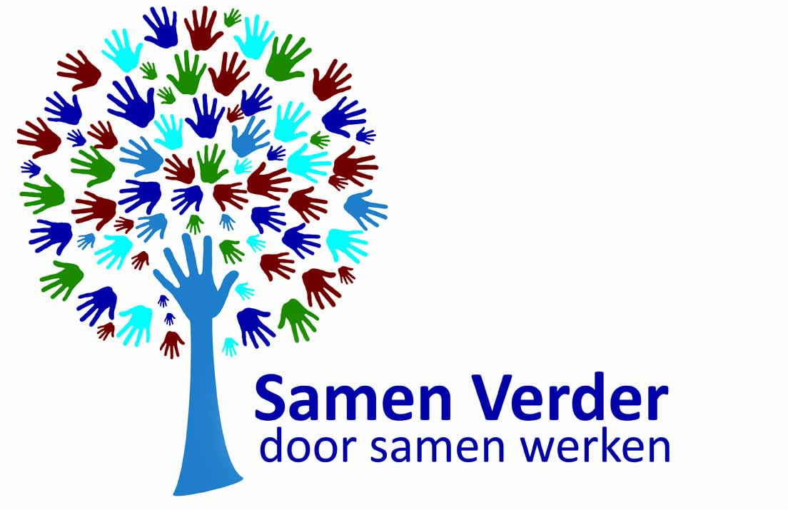

Inleiding
Heb jij last van lichamelijk of fysiek geweld of misbruik of heb jij hier last van gehad? Wij bieden jou alle informatie over misbruik en mishandeling, geven je de mogelijkheid om te chatten met andere slachtoffers of hulpverleners en bieden je hulpmogelijkheden. Op deze website ben je niet alleen. Samen kunnen we op zoek naar de hulp die jij nodig hebt.
Over ons
Deze website is gemaakt naar aanleiding van een literatuuronderzoek. Wij hebben literatuuronderzoek gedaan naar seksueel misbruik en de gevolgen hiervan. Omdat uit dit onderzoek bleek dat er veel gevolgen zijn van seksueel misbruik en dit een moeilijk te bespreken onderwerp is, is deze website opgezet. Het idee van de website is dat jullie hier informatie op kunnen vinden, maar ook kunnen praten met lotgenoten. Dit kan de stap om te praten over jullie ervaringen en gevoelens makkelijker maken. Ook kunnen jullie via deze weg (anoniem) praten met verpleegkundigen, wij hopen dat het voor jullie zo makkelijker is om de drempel over te gaan om toch te praten over jullie gevoelens. Vergeet vooral niet dat jullie er niks aan kunnen doen en dat jullie je niet hoeven te schamen voor wat er gebeurd is. Wij als verpleegkundigen staan voor jullie klaar om met jullie chatten, dus doe dit vooral als je erover wil praten of gewoon een vraag hebt.
Aangifte
Natuurlijk is het ook mogelijk om aangifte te doen nadat je seksueel misbruikt bent, dit kan om verschillende vormen van seksueel misbruik gaan. Wij begrijpen dat dit een moeilijke stap is en dat er gevoelens van angst of schaamte kunnen zijn. Toch is het belangrijk dat je je bedenkt dat mishandeling of misbruik strafbaar is. De dader kan alleen gestraft worden als je aangifte doet. Ook kan jij hierdoor ervoor zorgen dat de dader niet meer bij een ander kan doen.
Wanneer je aangifte wil doen kan dit bij de regiopolitie, hier maak je eerste een melding van wat er gebeurd is. Een melding wordt dan meestal gevolg door een informatief gesprek, hier kan je duidelijker vertellen wat er gebeurd is en kan de politie je uitleggen wat de mogelijkheden zijn. Na dit gesprek kan je zelf gaan overwegen of je wel of geen aangifte wil doen, maar daarover hoor je meer van de politie bij het gesprek. Je kan jaren na het seksuele misbruik nog aangifte doen maar het is wel het best om dit zo snel mogelijk te doen, dan zijn eventuele sporen nog het beste aanwezig.
Voor aangifte bij de politie kan je bellen naar 0900-8844. Wil je hier hulp bij of met iemand overleggen? In dit geval kan je contact opnemen met Slachtofferhulp Nederland en bel je naar 0900-0101. In het specifieke geval van huiselijk geweld kan je bellen met Veilig Thuis, 0800-2000. Dit telefoon gesprek kan gehaal anoniem plaatsvinden.
